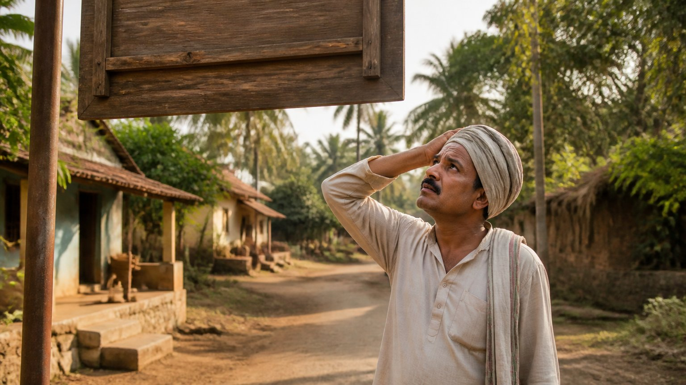

क्या किताब गुरु की जगह ले सकती है?
एक लड़का सोचता है, "मैं बाज़ार से ग्रंथ ले आऊँगा और ख़ुद पढ़ लूँगा।" वह ग्रंथ ले आता है और उसे लगता है कि उसने छोटा रास्ता खोज लिया।
अब गुरु से छुटकारा, कुछ सीखने की ज़रूरत नहीं, कोई सेवा नहीं। दक्षिणा (गुरु को दी जाने वाली भेंट) भी बच गई और जीवन का समय भी।
क्या आपकी सोच भी ऐसी तो नहीं कि गुरु ने आख़िर किताब से ही तो सिखाया था, और वह किताब अब मेरे हाथ में है?
जब शब्दों को अक्षरशः पकड़ लिया जाए
लड़का घर बैठकर शास्त्र पढ़ना शुरू करता है। पहला वाक्य है: "टूट जाना बहुत अच्छा है, यह भगवान को प्रिय है।" फिर लिखा है कि वमन (उल्टी) भगवान को प्रिय है। और यह कि मृतक के ऊपर का वस्त्र पवित्र है।
बस, उसने "सीख" लिया। अब वह गाँव में घूमते हुए सोचता है, "मैं विद्वान हो गया।"
गुरुदेव याद दिलाते हैं वह पुराना उदाहरण: "May I follow you", एलिज़ाबेथ रानी, "बीबी रॉय ऑफ़ ग्रेट ब्रिटेन" को बीबी रॉय की पत्नी समझना और ग्रेट ब्रिटेन को अमेरिका में ढूँढना। अंधश्रद्धा ऐसे ही शुरू होती है।

एक "ज्ञानी" और उल्टा होता गाँव
गाँव में उसे एक परिवार दिखता है जहाँ लगातार झगड़े होते हैं, सब टूटा-फूटा है। वह कहता है, "रिश्ते टूटे हैं, यह बहुत अच्छा है, भगवान को पसंद है।" और उन्हें सलाह देता है: तलाक लो, झगड़ा करो।
उसका तर्क है, "मैंने शास्त्र पढ़ा है, मैं प्रमाण हूँ। मेरे गुरु भी किताब से पढ़ाते थे, तो मैंने भी किताब से पढ़ लिया।"
अस्पताल में डॉक्टर और नर्स उल्टी साफ़ करवाते हैं, तो उसे क्रोध आता है: "इतनी पवित्र चीज़ फेंक रहे हो? इसकी कीमत मैं जानता हूँ!" वह सब बड़े ड्रमों में भरकर भगवान को चढ़ाने के लिए रख लेता है।
श्मशान में शव के ऊपर का वस्त्र फेंका जाता है, तो फिर वही क्रोध: "इसे भी रखो, यह पवित्र है!"
धीरे-धीरे पूरा गाँव उल्टा-पुल्टा होने लगता है।
"मैं स्वयं अपना गुरु हूँ"
तभी गाँव में एक दूसरे गुरु आते हैं। (इस लड़के को अपने गुरु ही उल्टे लगते थे, इसीलिए उसने यह राह पकड़ी थी।)
गुरु पूछते हैं, "यह क्या कर रहे हो? ये सब अपवित्र चीज़ें हैं, फेंक देनी चाहिए। क्या तुम्हारा कोई गुरु नहीं है?"
लड़का गर्व से कहता है, "मैं स्वयं अपना गुरु हूँ।"
गुरु लेना पहला कर्तव्य है
गुरु उसे बिठाकर समझाते हैं कि शास्त्र समझने के लिए गुरु चाहिए ही चाहिए। प्रथम कर्तव्य है गुरु लेना।
मातृदेवो भव। पितृदेवो भव। आचार्यदेवो भव।
(तैत्तिरीय उपनिषद्, शिक्षावल्ली १.११.२)
माता को देवता मानो, पिता को देवता मानो, आचार्य (शिक्षक) को देवता मानो।
पहली गुरु माँ होनी चाहिए थी। वह ज्ञानी न हो तो पिता। उस समय पुरुष सीखकर आते थे और उनके द्वारा लड़कियाँ भी सीखती थीं। और यदि माता-पिता दोनों के पास ज्ञान न हो, तो बच्चे को आचार्य के पास भेजना चाहिए।
शास्त्र संकेतों में बोलते हैं
अब गुरु बताते हैं कि शास्त्र का असली अर्थ क्या था:
- "टूटी हुई चीज़": गाय से निकाला गया दूध, जो गाय से अलग हो गया। पेड़ से तोड़ा गया फल। यही भगवान के अभिषेक और अर्पण के लिए है।
- "वमन": मधुमक्खी फूलों का रस लेकर उगलती है, वही मधु है। और मधु से भी भगवान का अभिषेक होता है।
- "मृतक का वस्त्र": रेशम के कीड़ों के मरने के बाद बना रेशम। भारी रेशमी साड़ी चढ़ाते हुए हम कहते हैं, "वस्त्रं समर्पयामि"।
शास्त्र ऐसे ही होते हैं। अक्षर एक बात कहते हैं, और संकेत किसी गहरी बात की ओर होता है। इसीलिए आचार्य जी कहते हैं कि हमारा प्रथम कर्तव्य है गुरु के पास जाकर शास्त्र समझना, और उसी से नियत कर्म करना।
क्या आपने कभी किसी आध्यात्मिक बात को अक्षरशः पकड़कर उसका उल्टा अर्थ निकाला है?
तामसिक कर्ता बनाम सात्त्विक कर्ता
लड़के ने भी कर्म किया, पर भूल कहाँ हुई? वह तामसिक कर्ता था, यानी अज्ञान और जड़ता से कर्म करने वाला।
हमें बनना है सात्त्विक कर्ता, जो शास्त्र-विधि से कर्म करे। और शास्त्र है गुरु का अपना जिया हुआ ज्ञान, जो किताब में उतरता है। वह ज्ञान सीधे किताब से कभी नहीं आता।
या दत्तात्रेय बनो, या जीवित गुरु लो
दत्तात्रेय महाराज को ज्ञान सीधे संसार से, चौबीस गुरुओं से मिला था। यदि आपमें वैसी पात्रता है, तो ठीक।
नहीं है, तो देहधारी गुरु चाहिए ही चाहिए। व्यावहारिक ज्ञान के बिना शास्त्र समझ में नहीं आता।
आचार्य जी बताते हैं कि शास्त्र के अनुसार कर्म करने का अर्थ है गुरु के अनुसार, जीवित गुरु के अनुसार कर्म करना। यही सत्त्व गुण की सही समझ है।
मुख्य बातें
- किताब से शास्त्र पढ़ लेना गुरु का शॉर्टकट नहीं है; अक्षरशः पढ़ा गया शास्त्र अंधश्रद्धा और विनाश तक ले जा सकता है।
- शास्त्र संकेतों में बोलते हैं: "टूटी चीज़" दूध और फल है, "वमन" मधु है, "मृतक का वस्त्र" रेशम है।
- गुरु लेना प्रथम कर्तव्य है: पहले माँ, फिर पिता, फिर आचार्य।
- शास्त्र गुरु का जिया हुआ ज्ञान है; उसे गुरु से समझकर ही नियत कर्म करना है।
- तामसिक कर्ता नहीं, सात्त्विक कर्ता बनो, जो शास्त्र-विधि यानी जीवित गुरु के अनुसार कर्म करे।
- या दत्तात्रेय जैसी पात्रता हो, या फिर जीवित गुरु अनिवार्य है।